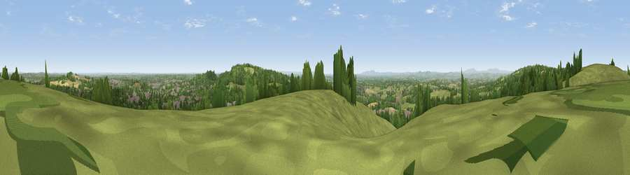

Viewpoint near Rubery
#6682 in England · top 6% of its area beats it · near RuberyThe view, rendered

A 360° render of this exact spot computed from the terrain model, tree cover and land cover — summer colours, afternoon light, calibrated against photographs of famous viewpoints. Real trees, hedges and buildings will differ in detail.
The panorama
Grey silhouette: terrain skyline in each direction (720 bearings, Earth curvature and refraction included). Dashed green: skyline with trees (+15 m) and buildings (+8 m) as obstacles. Blue strip: how far the ground is visible on each bearing.
Where the view opens
Wedge length = distance to the farthest visible ground on that bearing (vegetation-aware). Rings at 10, 25 and 50 km.
What fills the view
44% grassland · 31% woodland · 15% built-up · 10% cropland
Angular shares of the visible panorama (visual magnitude), not map area. Landscape diversity 0.54 (0–1 Shannon).
Key numbers
More beautiful places nearby
The staircase of upgrades: each row has a higher view potential than everything closer. Driving times are estimates from straight-line distance, calibrated against real road routing — check an actual route before setting out.
| Place | Direction | Drive | Score |
|---|---|---|---|
| Windmill Hill | NNW · 0 km | ~1 min | 73.2 |
| Viewpoint near Clent | NW · 5 km | ~11 min | 73.8 |
| Viewpoint near Clent | WNW · 5 km | ~11 min | 74.3 |
| Viewpoint near Abberley | WSW · 23 km | ~38 min | 77.5 |
| Viewpoint near Abberley | WSW · 24 km | ~40 min | 78.1 |
| Abberley Hill | WSW · 24 km | ~40 min | 80.4 |
| Viewpoint near Great Witley | WSW · 26 km | ~42 min | 83.4 |
| North Hill | SSW · 37 km | ~56 min | 86.8 |
52.39574, -2.04037 · source: screening · position refined by local search. Computed location — check access rights before visiting.